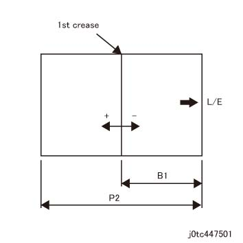

ADJ 47.3.1 折痕 (单面/单个 折叠) 位置 调整 (DC128) 
目的
调整 折痕 (单面/单个 折叠) 位置 to 指定值.
[检查]
输出 折叠 位置 printout or 调整 printout by 以下步骤:
[Revoria 按下 E1136G, ApeosPro C810G,Apeos C8180G, Apeos 7580G, Revoria 按下 EC1100, Revoria 按下 SC180G]
输入 Diag 模式, 选择 [维护 / Diagnostics] -> [调整 / 其他] -> [装订器 - 折叠 位置 调整] -> [折叠 位置 Printout], change to 以下 values 和/与 [确认 设置] 和 按下 [启动].
设置项目
设置值
折叠 功能
折痕 - 单面/单个 折叠
纸盘
选择 纸张 纸盘
1 面/2 面
1 面
装订 移位
无
Face Up/下
Face Up
号码 纸张的
1
Copies
1
Image
Grid (调整 折叠 位置)
[Revoria 按下 PC1120]
输入 the PC Diag screen, go 到 [子-系统 检查] screen, 和 选择 [DC128]. -> 从 the [折叠 功能] pull-下 menu, 选择 [折痕 调整], configure the 打印 设置 如下, 和 选择 [启动].
打印 设置 项目
设置值
折痕 调整
单面/单个 折叠
纸盘
选择 纸张 纸盘
1 面/2 面
1 面
装订针
无
Face Up/下
Face Up
号码 纸张的
1
Copies
1
Image
Grid (调整 折叠 位置)
检查 折痕 位置 on 纸张 printed 出. (图 1)

(图 1) tc447501
项目
标称 值 (mm)
单面/单个 折叠
B1
P2 x(1/2)
Accuracy of 折痕 位置 in respect of 标称 值
1 折痕 (折痕 of 92 mm或 更多 从 the 引线/导向 边缘 of 纸张): +/-1.0 mm
1 折痕 (折痕 最大到 92 mm 从 the 引线/导向 边缘 of 纸张): +/-1.5 mm
调整
调整 by 以下步骤.
[ApeosPro C810G, Apeos C8180G, Apeos 7580G, Revoria 按下 EC1100, Revoria 按下 SC180G]
输入 Diag 模式, 选择 [维护 / Diagnostics] -> [调整 / 其他] -> [装订器 - 折叠 位置 调整] -> [折痕 - 单面/单个 折叠] -> 在...上 下一个 screen, 选择 项目 to 调整 从 以下, 和 按下 [确认 设置].
1st 折痕 涂布纸 52-105 gsm
1st 折痕 涂布纸 106-220 gsm
1st 折痕 涂布纸 221-350 gsm
1st 折痕 非涂布 52-105 gsm
1st 折痕 非涂布 106-220 gsm
1st 折痕 非涂布 221-350 gsm
1st 折痕 其他 52-105 gsm
1st 折痕 其他 106-220 gsm
1st 折痕 其他 221-350 gsm
Change the 值 和/与 参考 to 图 1, 和 按下 [Save].
Increasing the 数据 移动到 the [+] 侧面 当...时 decreasing it 移动到 the [-] 侧面.
NVM 1 计数 = 移动 by 0.1 mm.
返回 检查 1, 检查 折痕 和/与 [折叠 位置 Printout], 和 调整 it 直到 指定值 is obtained.
[Revoria 按下 PC1120]
输入 the PC Diag screen, go 到 [子-系统 检查] screen, 和 选择 [DC128]. -> 从 the [折叠 功能] pull-下 menu, 选择 [折痕 调整]. -> 选择 [值 在...之前 调整] 的 项目 to be adjusted 从 在...之中 以下.
折痕 位置 1-1 调整 (单面/单个 折叠, 1st 折痕) (非涂布, 52 to 105 gsm)
折痕 位置 1-2 调整 (单面/单个 折叠, 1st 折痕) (非涂布, 106 to 220 gsm)
折痕 位置 1-3 调整 (单面/单个 折叠, 1st 折痕) (非涂布, 221 to 350 gsm)
折痕 位置 1-4 调整 (单面/单个 折叠, 1st 折痕) (涂布纸, 52 to 105 gsm)
折痕 位置 1-5 调整 (单面/单个 折叠, 1st 折痕) (涂布纸, 106 to 220 gsm)
折痕 位置 1-6 调整 (单面/单个 折叠, 1st 折痕) (涂布纸, 221 to 350 gsm)
折痕 位置 1-7 调整 (单面/单个 折叠, 1st 折痕) (其他, 52 to 105 gsm)
折痕 位置 1-8 调整 (单面/单个 折叠, 1st 折痕) (其他, 106 to 220 gsm)
折痕 位置 1-9 调整 (单面/单个 折叠, 1st 折痕) (其他, 221 to 350 gsm)
请参阅 图 1 和 use the [+] 和 [-] buttons to change the 值*, configure the 打印 设置 as in 检查 1, 和 选择 [启动].
Increasing the 数据 移动到 the [+] 侧面 当...时 decreasing it 移动到 the [-] 侧面.
NVM 1 计数 = 移动 by 0.1 mm.
*: 此 可以 也 be 已完成 by 双面/双-clicking to 选择 值 和 然后 changing it by Keypad 入口.
当...时 the 调整 printout is 输出, use it to 检查 折痕 再次 和 调整 直到 指定值 is achieved.
在...之后 completing the 调整, 选择 [设置] to 更新 the NVM值 的 主机.
[Revoria 按下 E1136G]
输入 Diag 模式, 选择 [维护 / Diagnostics] -> [调整 / 其他] -> [装订器 - 折叠 位置 调整] -> [折痕 - 单面/单个 折叠] -> 在...上 下一个 screen, 选择 项目 to 调整 从 以下, 和 按下 [确认 设置].
1st 折痕 灯/光线 光面 卡纸
1st 折痕 涂布纸 1A/1B, 光面 卡纸
1st 折痕 Heavy 光面 卡纸, X-HW 光面 卡纸
1st 折痕 普通纸
1st 折痕 轻量 卡纸, 卡纸
1st 折痕 重磅 卡纸, Extra Heavy 卡纸
1st 折痕 再生 纸张
Change the 值 和/与 参考 to 图 1, 和 按下 [Save].
Increasing the 数据 移动到 the [+] 侧面 当...时 decreasing it 移动到 the [-] 侧面.
NVM 1 计数 = 移动 by 0.1 mm.
返回 检查 1, 检查 折痕 和/与 [折叠 位置 Printout], 和 调整 it 直到 指定值 is obtained.